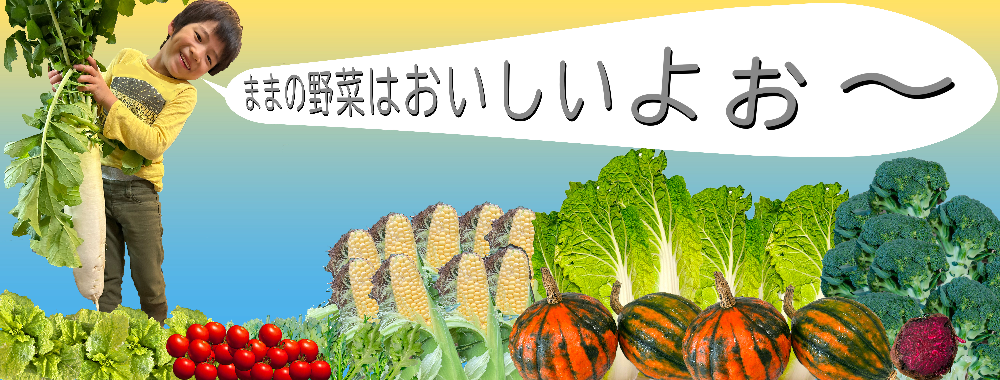
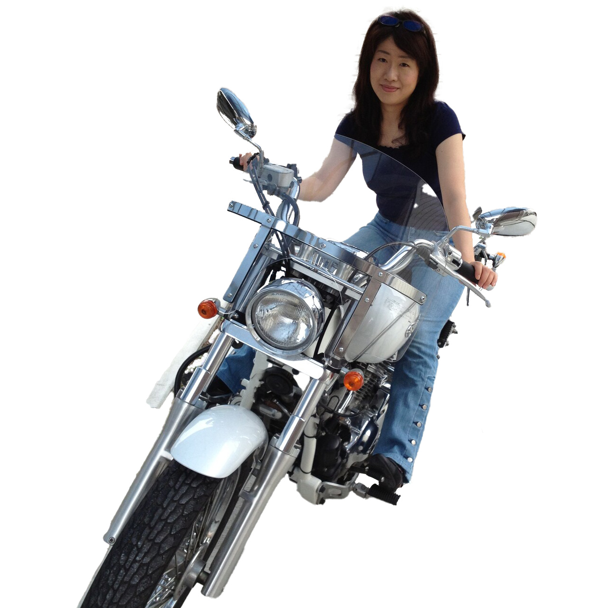

Message
初めまして
わたしは10年以上、システム開発の仕事に携わってきましたが、
その傍、耕作放棄地対策の「草の根活動」に取り組んでいます。
自身のさまざまな活動を発信するため、
「Webデザイナー」兼「システム開発者」として独立いたしました。
お客さまの想いをステキな形で実現することが目標です。
どうぞよろしくお願いいたします。
Works
Business content
DX化推進
職場の皆さまが
「気持ち良く働くための最適解」
をクライアント様と見つけます
システム開発
「みんなが幸せに働けるシステム」の構築を目指します
PHP, HTML, CSS, JavaScript, React
Webサイト制作
見やすい、分かりやすい、伝わるHPを作成します
Webライティング
クライアント様の魅力を引き出す記事を作成します
About

Mayumi Sasaki
- 仙台市生まれ
- 2020年、日本の食料自給率改善を目標とし、減農薬農業を開始
- 2022年、狩猟免許を取得し、耕作放棄地対策を開始
- 2024年、素敵なアプリ開発を目標に、Webデザインの学習を開始
- 趣味はバイクツーリング
Profile
-
1994年
大学〜大学院
豊橋技術科学大学にて、大気汚染物質の移流シミュレーション研究室に所属（Fortran）
-
2001年
雇用・能力開発機構に総合職として就職
本来の業務よりも業務改善のためのVBAマクロ作成が楽しくなり退社
-
2003年〜
プログラマーの道へ
東北大学の研究補助員として、分子動力学シミュレーションソフトを用いた、分子挙動解析方法の確立（Fortran）
医療系画像管理ソフト開発企業にて、Webシステム開発（.Net, C#, HTML, JavaScript, CSS）
インターネットプロバイダにて、Web顧客管理システムのメンテナンス等に従事(PHP, HTML, JavaScript, CSS)
建設コンサルタントにて、キントーンによる業務改善アプリ作成によるDX化の推進(JavaScript)
-
2025年〜
Webデザインも可能なアプリ開発者の道へ
「みんなが幸せに働ける、素敵なアプリ開発」が目標⭐️